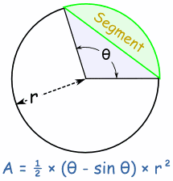

Area of Segment:
The Area of a Segment is the area of a sector minus the triangular piece (shown in light blue here).

There is a lengthy reason, but the result is a slight modification of the Sector
formula:
Area of Segment = θ − sin(θ)/2 × r2 (when θ is in radians)
Area of Segment = ( θ /360 × π − sin(θ)/2 ) × r2 (when θ is in degrees)